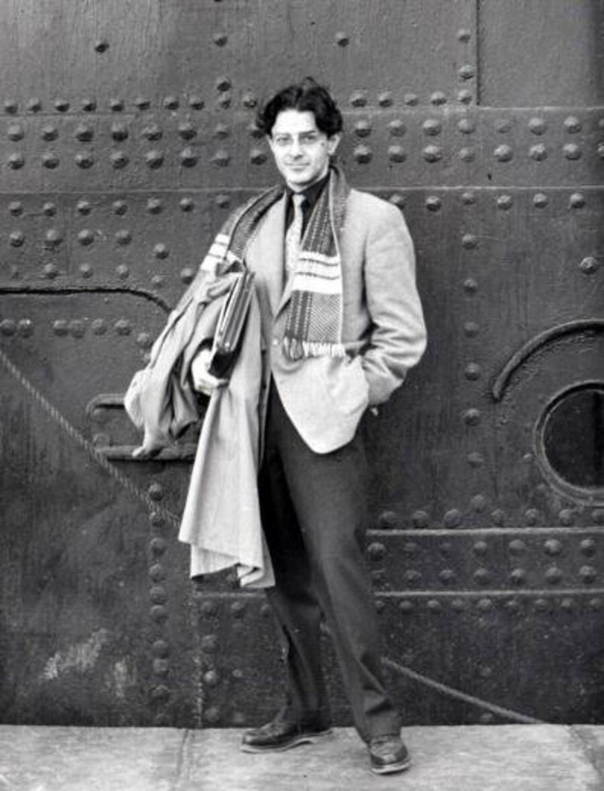

"Kariyerin İlk Yılları" Attilâ İlhan, edebi kariyerinin ilk yıllarında kendini çeşitli sanat alanlarında geliştirdi. Henüz lise yıllarında şiir yazmaya başlayan İlhan, 1941 yılında, henüz 16 yaşındayken Nazım Hikmet’in bir şiirini arkadaşlarına okuduğu için tutuklandı ve okuldan uzaklaştırıldı. Bu olay, onun edebiyata ve yazıya olan bağlılığını daha da güçlendirdi. Hukuk Fakültesi'nde eğitimine devam ederken, şiirleri ve yazıları çeşitli dergilerde yayımlanmaya başladı. 1948 yılında, Paris'e giderek orada bir süre yaşadı ve Fransız edebiyatı ile düşünce dünyasından etkilendi. Bu dönemde edebi kimliğini şekillendiren Attilâ İlhan, şiirlerinde toplumsal konuları işlemeye, bireyin yalnızlığını ve aşkı derinlemesine incelemeye başladı. Paris'teki bu deneyimleri, onun sonraki yıllarda kaleme alacağı eserlerine büyük bir zemin hazırladı. "Kariyerin ilk yılları" olarak nitelendirilebilecek bu dönem, Attilâ İlhan'ın edebi yolculuğunun temellerini attığı, fikirlerini ve tarzını olgunlaştırdığı bir süreç olmuştur.